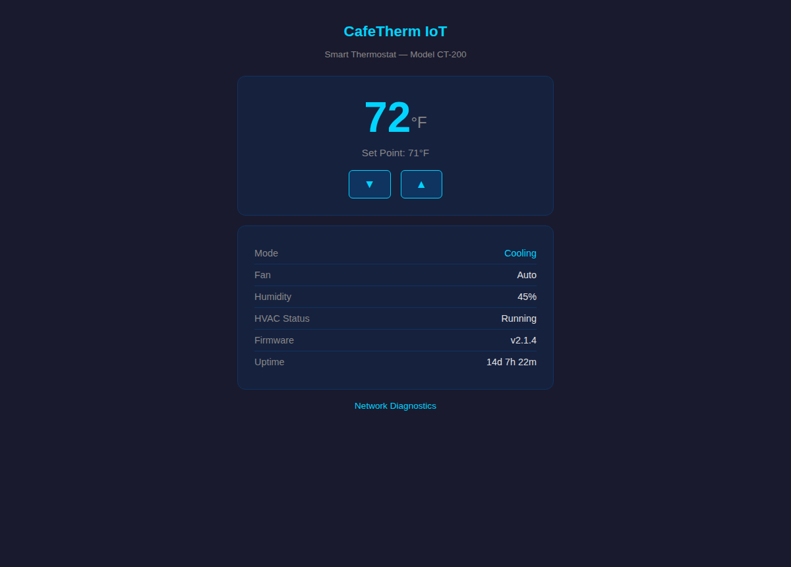
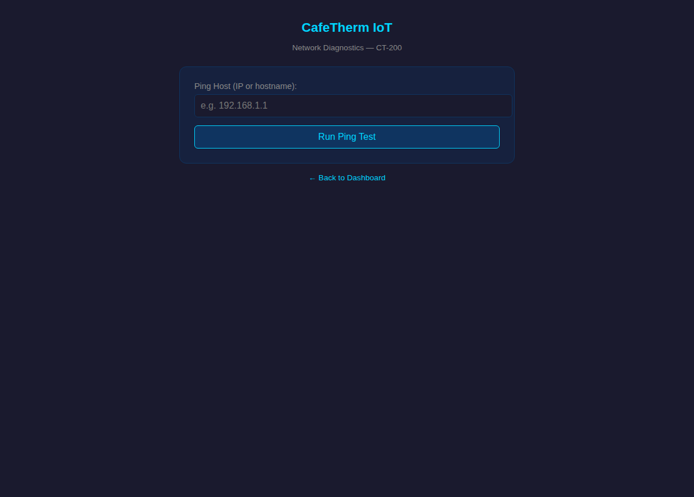
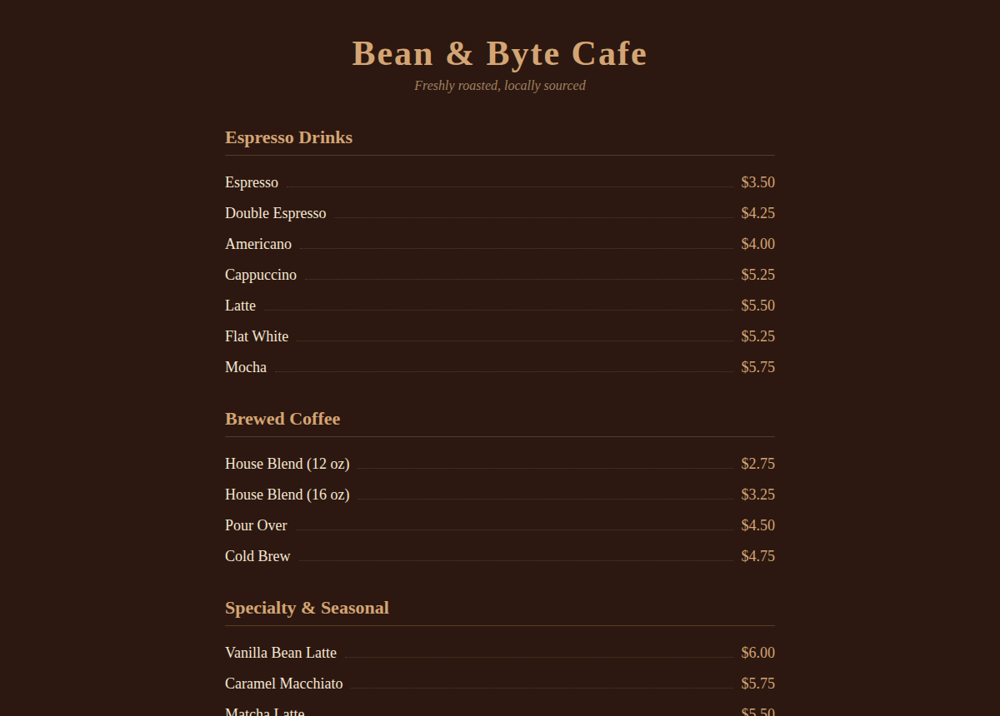

Exercise 3B: Smart but Stupid
Before You Begin
Previous exercises mapped the Bean & Byte Cafe network, analyzed traffic, and enumerated services. The focus now shifts to exploitation: three IoT devices on the cafe network have different vulnerability classes, and your job is to compromise each one and recover a flag fragment. Your VPN must be connected and your terminal open before continuing.
Scenario
The Bean & Byte Cafe owner added three consumer IoT devices to the network without IT oversight: a smart thermostat (CafeTherm CT-200), a security camera DVR (HikVision), and a digital menu display. Each device has a web management interface exposed on the cafe network with no access controls beyond factory defaults.
Your assessment scope covers four devices: the smart thermostat, the security camera DVR, the digital menu display, and the barista workstation. Each IoT device holds one part of the flag. Your goal is to exploit the vulnerabilities present on each device and assemble the complete flag from the three recovered parts. Flag tokens in service responses are prefixed with OCR-SN:: use only the value after the prefix when assembling the flag.
Your Objectives
- Identify web management interfaces on IoT devices across the cafe network
- Exploit OS command injection on the thermostat's diagnostics page
- Discover and use an SSH private key stored on a network share to access the menu display
- Exploit an insecure file read endpoint on the security camera DVR
- Assemble the three-part flag in
OCR{...}format
Background: IoT Device Security
Consumer IoT devices are designed for ease of setup, not security. Manufacturers prioritize plug-and-play functionality over secure defaults, which leads to a predictable set of vulnerabilities across device categories.
Command injection occurs when a device's web interface passes user input directly to a system shell. Network diagnostic tools, ping, traceroute, DNS lookup, are common culprits because they wrap system commands. If the application does not sanitize input, an attacker can append shell metacharacters (;, |, &&) to inject arbitrary commands.
Insecure file handling encompasses multiple vulnerability classes: file upload without validation, arbitrary file read through path traversal, and directory listing of sensitive paths. DVR and camera systems frequently expose firmware update endpoints that accept any file without checking type, size, or content.
Credential and key reuse happens when administrators use the same credentials or SSH keys across multiple devices. Finding a private key on one system often grants access to another. IoT devices rarely enforce key rotation or certificate pinning.
graph LR
A["Thermostat<br/>:8080"] -->|"Command<br/>Injection"| B["Flag Part 1"]
C["DVR<br/>:8080"] -->|"File Read<br/>Traversal"| D["Flag Part 3"]
E["Barista PC<br/>SMB:445"] -->|"SSH Key<br/>Discovery"| F["Menu Display<br/>:22"]
F -->|"SSH Access"| G["Flag Part 2"]
style A fill:#00d4ff,color:#000
style C fill:#e94560,color:#fff
style E fill:#6aaa64,color:#fff
style F fill:#6aaa64,color:#fff
style B fill:#ffd700,color:#000
style D fill:#ffd700,color:#000
style G fill:#ffd700,color:#000The three attack paths shown above are independent; you can complete them in any order.
Engagement Status
| Phase | Status |
|---|---|
| Reconnaissance | Complete (Exercises 1-2) |
| Service Enumeration | Complete (Exercises 3-5) |
| Exploitation | Active |
| Post-Exploitation | Pending |
Flag Progress
| Part | Source | Value |
|---|---|---|
| 1 | Smart Thermostat (command injection) | ??? |
| 2 | Menu Display (SSH key reuse) | ??? |
| 3 | Security Camera DVR (file read) | ??? |
| Flag | OCR{________} |
Walkthrough
Step 1: Launch the Exercise
Open the platform in your browser and start the exercise environment.
- Navigate to Exercises and locate Exercise 6: Smart but Stupid
- Click Launch and wait for the status to change to Running
- Note the target IP addresses displayed in the Active Lab View
Four containers will start: the smart thermostat, the security camera DVR, the digital menu display, and the barista workstation.
Attack Path 1: Thermostat Command Injection
Step 2: Explore the Thermostat Web Interface
Browse the thermostat web interface
The smart thermostat serves a web interface on port 8080. Replace <thermostat_ip> with the address shown in the Active Lab View. Fetching the landing page reveals the navigation and firmware details.
The dashboard displays temperature readings, HVAC status, and firmware version. Look at the page for navigation links to other pages.
Browse to the thermostat dashboard
Point a browser at http://<thermostat_ip>:8080/ to see the same dashboard the curl command pulls. The CafeTherm CT-200 panel shows the current temperature, set point, mode, fan, humidity, HVAC status, firmware version, and uptime. The "Network Diagnostics" link at the bottom is the route you visit next, and it is where the command injection lives.

Step 3: Discover the Diagnostics Page
Open the diagnostics page
The thermostat has a network diagnostics page linked from the dashboard. Visit it directly to inspect the form it presents.
The diagnostics page presents a form that accepts a hostname or IP address and runs a ping test. User input passed directly to a system command is a classic command injection surface.
Browse to the Network Diagnostics page
Open http://<thermostat_ip>:8080/diagnostics in a browser to see the form by itself. The single "Ping Host (IP or hostname)" field and "Run Ping Test" button are the entire interface. Whatever a user types into that field is handed straight to a shell ping command, so a value like 127.0.0.1;id runs id after the ping. The form is the injection point for every payload in Steps 4 and 5.

Step 4: Test for Command Injection
Establish baseline ping behavior
Send a normal ping request first to establish baseline behavior. The clean response tells you what legitimate output looks like before you start injecting.
The response contains standard ping output.
Test for command injection
Now test for command injection by appending a semicolon and a second command. The ;id runs the id command after the ping if the input reaches a shell.
If the response includes uid= output after the ping results, command injection is confirmed.
Step 5: Extract the Flag Part
Read the flag file via injection
Use command injection to read the flag file. The injected cat /etc/flag_part.txt runs as the web service user and returns the file contents in the HTTP response.
The output contains the flag part prefixed with OCR-SN:. Record the token value after the prefix.
Attack Path 2: SSH Key Discovery and Menu Display Access
Step 6: Enumerate the Barista Workstation SMB Share
List the SMB share recursively
The barista workstation exposes an SMB share with guest access. The -N flag connects without a password, and recurse ON; ls walks every subdirectory.
Look for subdirectories beyond the employee schedule. The it_notes/ directory contains files related to device management.
Step 7: Download the SSH Private Key
Download the SSH private key
The it_notes/ directory contains an SSH private key used for the menu display. Download it and tighten its permissions: SSH refuses to use a key that is world-readable.
smbclient //<barista_ip>/schedules -N -c 'get it_notes/menu_display_key /tmp/menu_key'
chmod 600 /tmp/menu_key
The chmod 600 step is required or the next SSH attempt will fail with a permissions warning.
Read the README for context
Read the README file in the same directory to confirm the key's purpose. The trailing - streams the file to stdout instead of saving it.
The note should name the menu display and the menu-admin account the key belongs to.
Step 8: SSH to the Menu Display
SSH to the menu display with the key
Use the downloaded private key to authenticate as menu-admin on the menu display. The -i flag selects the key, and StrictHostKeyChecking=no skips the first-connection prompt.
A successful login drops you into a shell on the menu display as menu-admin.
Browse to the menu display web UI
The menu display also serves a customer-facing web page on port 80. Open http://<menu_ip>/ to see the digital menu board the device renders for cafe patrons. The public page holds nothing sensitive, but it confirms you are looking at the right device before you SSH in with the recovered key. The flag part lives in the menu-admin home directory, reachable only over SSH.

Read the flag part on the menu display
Once connected, read the flag part. The file sits in the menu-admin home directory on the compromised device.
The output contains the flag part prefixed with OCR-SN:. Record the token value after the prefix and exit the SSH session.
Attack Path 3: DVR File Read
Step 9: Explore the DVR Web Interface
Fetch the DVR login page
The security camera DVR serves a login page on port 8080. Pull the landing page to confirm the device and look for referenced routes.
The DVR has additional endpoints beyond the login page. Its firmware management interface and diagnostic file read endpoint are accessible without authentication.
Browse to the DVR login console
Open http://<dvr_ip>:8080/ in a browser to see the HikVision DVR web console login. The branded login box is the only page the device advertises, but the diagnostic /read endpoint behind it needs no credentials at all. Seeing the login confirms the device identity (an 8-channel DVR on firmware v5.4.1) before you reach past it to the unauthenticated file-read route in the next step.

Step 10: Exploit the File Read Endpoint
Read the flag through the file-read endpoint
The DVR exposes a /read endpoint that accepts a file path parameter and returns the file contents without access control. Point the file parameter at the flag file to retrieve it directly.
The response contains the flag part prefixed with OCR-SN:. Record the token value after the prefix.
Step 11: Assemble the Flag
Combine the three flag parts in order. The thermostat provides the first part, the menu display provides the second, and the DVR provides the third. Join them with underscores in the flag format:
Record Your Findings:
Thermostat command injection output (Step 5):
SSH key discovery and menu display flag part (Step 8):
DVR file read output (Step 10):
Assembled flag:
Component Value Part 1 (Thermostat) Part 2 (Menu Display) Part 3 (DVR) Full flag OCR{...}
Step 12: Submit the Flag
Paste the assembled flag into the Submit Flag form on the platform and click Submit.
Analysis Questions
1. The thermostat's diagnostics page runs ping by passing user input to os.popen(). What safer alternative could the developer use to execute the ping command without allowing injection?
Reveal Answer
The developer could use Python's subprocess.run() with a list of arguments instead of a shell string: subprocess.run(["ping", "-c", "1", host], capture_output=True). The list form passes each argument directly to the process without shell interpretation, so metacharacters like ; and | are treated as literal characters rather than command separators. Alternatively, the application could validate that the input matches an IP address regex before passing it to any system command.
2. The DVR's /read endpoint allows reading any file on the system. Beyond flag retrieval, what sensitive system files could an attacker read to deepen their compromise?
Reveal Answer
An attacker could read /etc/passwd to enumerate user accounts, /etc/shadow (if readable) to obtain password hashes for offline cracking, SSH private keys from user home directories (/home/*/.ssh/id_*), application configuration files containing database credentials or API keys, and /proc/self/environ to leak environment variables that may contain secrets. Each file expands the attacker's knowledge and potential access.
3. The menu display SSH key was stored on the barista workstation's open SMB share. What controls would prevent this attack path?
Reveal Answer
The SSH key should not reside on a publicly accessible share. Mitigations include: requiring authentication on the SMB share (removing guest access), storing SSH keys only on the systems that need them, using per-device unique credentials rather than shared keys, implementing network segmentation to prevent the workstation from reaching the menu display directly, and using certificate-based authentication with short-lived certificates managed by a CA (Certificate Authority) rather than static key files.
Key Takeaways
- IoT command injection follows the same pattern as web application command injection: unsanitized user input reaches a system shell through diagnostic tools, configuration pages, or management interfaces
- Arbitrary file read vulnerabilities on IoT devices can expose credentials, configuration data, and sensitive files without requiring authentication
- SSH key reuse across devices creates lateral movement paths; finding one private key on a network share can unlock access to multiple systems
- Consumer IoT devices prioritize ease of use over security; default configurations, debug endpoints, and unsecured management interfaces are common across product categories
- Exercise 7 builds on exploitation by demonstrating lateral movement: chaining multiple compromises to reach deeper into the network